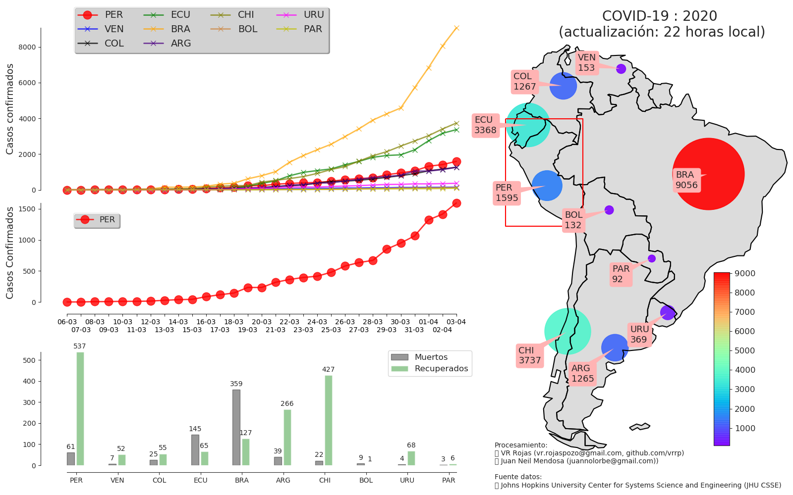

Vigilancia de Coronavirus (COVID-19) en Sudamerica
Casos confirmados, recuperados y muertes

Fuente de datos: Jhons Hopkins University Center for Systems Science and Engineering (JHU CSSE)
VR Rojas
email: vr.rojaspoazo@gmail.com
Lima, Perú